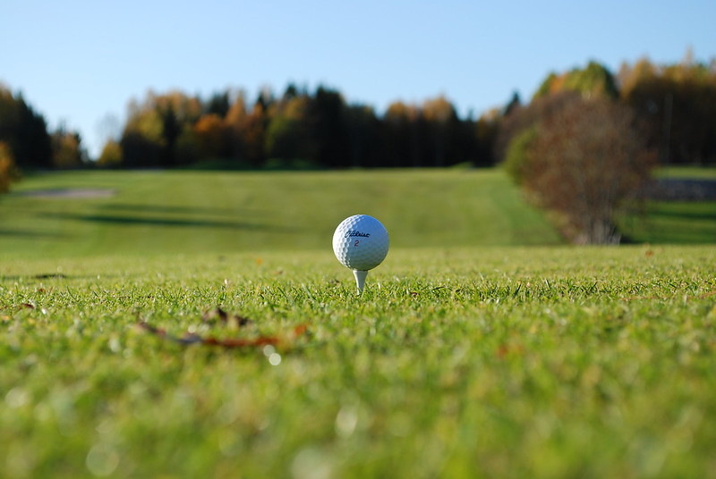

Spring Sports are always a pleasure to behold. The sun is coming back out, the temperatures are rising, and sports are finally back outdoors! Once again golf is offered, but it is joined by baseball and lacrosse! These three sports are extremely expensive to play, but once again, Play-it-Again-Sports is a great tool to use for equipment! Looking to relax during the summer as well? The park district offers Splash Cove, a water park that is enjoyable for anyone, regardless of age. 